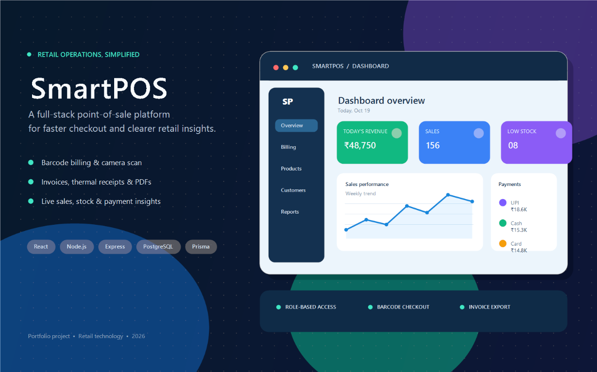

01 / FEATURED PROJECTFULL-STACK RETAIL PLATFORM
SmartPOS
A point-of-sale platform for retail checkout and store operations. It brings together role-based access, barcode billing, inventory and customer management, payments, invoice and receipt tools, and dashboards for sales and low-stock insights.